OLAY, GÖRÜNTÜ İZLEME, ARAŞTIRMA,
TESPİT VE YAKALAMA TUTANAĞI
Pendik İlçe Emniyet Müdürlüğü, Yenişehir Polis Merkezi Amirliğimiz idaresinde önceki tarihlerde meydana gelen çok sayıda Faili Meçhul Oto Hırsızlığı-Otodan hırsızlık suçları ile ilgili Polis Merkezimiz Suç Araştırma ve Soruşturma Büro Amirliği görevlileri olarak yapmış olduğumuz çalışmalarda; Olaylara ait tarih saat müşteki bilgileri ve özeti ile olaylara ait olan güvenlik kamerası görüntüleri aşağıya çıkartılmıştır.
1.OLAY
SUÇ NO
: 2021/4571
SUÇUN NEVİ
: OTODAN HIRSIZLIK
SUÇUN YERİ
Kurtköy Mah. Orhanlı Cad. (Dirlik Sokak
Kesişimi)Pendik/İstanbul
TARİHİ VE SAATİ
: 22.12.2021 09:00
İNTİKAL TARİHİ
: 22.12.2021 11:29
FAİL DURUMU
: Faili Meçhul
Müşteki
: T.C.NO:29896220750-Mete KODAŞ
Olayın Özeti
: 22.12.2021 tarih saat 11.30 sıralarında Polis Merkezi Amirliğine intikal eden
" OTODAN HIRSIZLIK " suç konusu ile ilgili olarak Müşteki Mete KODAŞ isimli şahıs ifadesinde; Ben Moov Garenta isimli Rent A Car şirket yetkilisiyim . Yetkim olduğuna dair noter evraklarını tahkikat evrakına eklenmek üzere siz görevlilere rızam ile teslim ediyorum. 34BDR733 plaka sayılı Renault Cliıo marka beyaz renkli 2019 model otomobil Kurtköy Mahallesi Orhanlı Caddesi ile Dirlik Sokak kesişiminde park halinde bulunmaktaydı. 22.12.2021 tarih saat 08.00 sıralarında şirket yetkilileri bana, aracın içerisinde hırsızlık meydana geldiğini bildirmeleri üzerine bende aracın park halinde bulunduğu yere giderek Polise haber verdim. Aracın içerisini kontrol ettiğimde araç içerisinde bulunan 1 Adet 6221974153 vergi numaralı , 024918 Belge seri numaralı Moov Dijital Ulaşım Çözümleri Ticaret Anonim Şirketine ait araç ruhsatının yerinde olmadığını ayrıca 1 Adet aracın içerisinde bulunan ve aracın çalışmasını sağlayan araç anahtar kartının yerinde olmadığını , ve aracın bir çok yerinde hasarlar olduğunu , aracın ön sol kelebek camının kırık olduğunu farkettim. Aracın içerisinden çalınan başkaca bir eşya yoktur. 34BDR733 plaka sayılı araç dün gece yani 21.12.2021 tarih saat 23.00 sıralarında kontrol edildiğinde araçta herhangi bir hasar bulunmamaktaydı. Aracın sol ön camını kırarak ifademde belirtmiş olduğum eşyaları çalan şahıs ya da şahıslardan yetkili olduğum şirket adına şikayetçiyim şeklinde beyanda bulunulması üzerine konu ile ilgili tahkikata başlanılmıştır.
2.OLAY
SUÇ NO
: 2021/4614
SUÇUN NEVİ
: OTO HIRSIZLIĞI
SUÇUN YERİ
Sülüntepe Mah. Mevlana Cad. No: 129Pendik/İstanbul
TARİHİ VE SAATİ
: 25.12.2021 03:22
İNTİKAL TARİHİ
: 25.12.2021 06:45
FAİL DURUMU
: Faili Meçhul
Müşteki
: T.C.NO:27847265348-Ulaş AŞIRI
Olayın Özeti
: 25.12.2021 günü saat 03.22 sıralarında, idaremiz Sülüntepe Mah. Mevlana Cad. No: 129 - Pendik/İstanbul (no 129 Önü) adresinde meydana gelen OTODAN HIRSIZLIK olayı ile ilgili olarak; Müşteki Ulaş AŞIRI ifadesinde:Yukarıdaki bilgiler doğrudur ve bana aittir. Ben Moov Dijital Ulaşım çözümleri Ticaret Anonim Şirketinde saha operasyon elemanı olarak çalışırım. Biz mobil uygulama üzerinden şahıslara araç kiralarız. Araçlarımızın sabit bir otoparkı yoktur. Cadde veya sokak üzerinde mobil uygulama üzerinden ödemeleri yapılır ve araç içerisinde torpidosunda bulunan 1 adet anahtar ile şahıslar araçlarını kiraladıkları süre içerisinde kullanırlar. 25/12/2021 tarih saat 03:22 sıralarında şirketimize ait 34 BFM 432 plaka sayılı Renault Clio 2019 marka model beyaz renkli park halindeki aracın kapısının izinsiz açıldığı bilgisi sistemimiz üzerinden ana merkeze ulaşmış. Sonrasında ben aynı gün 06:30 sıralarında bahse konu aracın
bulunduğu Sülntepe mahallesi Mevlana caddesi üzerinde bulunan No:129 önünde polisleri ve şiketimize ait aracı gördüm. Aracın sağ ön kelebek camı kırılmış ve aracı çalıştıramadıkları için torpido kısmında bulunan araç anahtarını şahıslar çalmışlar. Araçta çalınan başkaca birşey yoktur. Aracı 200 metre vurdurmak sureti ile yokuş
aşağı yürütmüşler ancak araç sistem üzerinden kapalı olduğu için çalışmamış. Polisler araçta gerekli incelemeleri yaptılar sonrasında Polis merkezine geldim. Aracın camını kırarak araç içersinden araç anahtarını çalan şahıs yada şahıslardan şikayetçityim.Dedi. Konu ile ilgili OYİ ekipleri gerekli çalışmaları yapmıştır. Asayiş ekiplerine gerekli bilgiler verilmiştir. Tahkikata başlanılmıştır.
3.OLAY
SUÇ NO
: 2021/4621
SUÇUN NEVİ
: OTODAN HIRSIZLIK
SUÇUN YERİ
Çamlık Mah. Ahi Sokak No: 17 Pendik/İstanbul
TARİHİ VE SAATİ
: 25.12.2021 10:30
İNTİKAL TARİHİ
: 25.12.2021 18:30
FAİL DURUMU
: Faili Meçhul
Müşteki
: T.C.NO:29896220750-Mete KODAŞ
Olayın Özeti
: 25.12.2021 günü saat:18:30 sıralarında Polis Merkezi Amirliğimize intikal eden OTODAN HIRSIZLIK olayı ile ilgili olarak; Müşteki Mete KODAŞ alınan ifadesinde; Ben halen belirtmiş
olduğum adreste ikamet ederim. Aynı zamanda da Moov isimli oto kiralama firmasında saha operasyon personeli olarak çalışırım. Bugün saat:10:30 sıralarında güvenlik ekibinden bizi kiralanan 34 DKY 650 plaka sayılı Renault Clio marka aracın camının kırık olduğu yönünde yeni kiralayan kişi tarafından ihbar olduğu bilgisi geldi. Bende görevim icabı aracın bulunduğu yer olan Çamlık Mahallesi Ahi Sokak No:17 sayılı adres önüne gittim. Bahse konu aracı kontrol ettiğimde ise sol ön kelebek camın kırık olduğunu, sigorta panelinin kapağının sökük olduğunu ve kurcalanmış olduğunu gördüm. Araç içerisine girerek yaptığım detaylı incelemede aracın torpido gözünde bulunan kontak anahtarını kontrol ettiğmide yerinde olmadığını, çalınmış olduğunu tespit ettim. Daha sonra 155 i aradım. Polisler geldiler ve gerekli incelemeleri yaptılar. Daha sonra bende firmam adına şikayette bulunmak üzere polis merkezinize geldim. Araç en son 24.12.2021 günü saat:15:31 sıralarında kiralanmış
ve yine aynı gün saat:17:50 sıralarında olayın meydana geldiği adrese bırakılmış. Bırakıldığı esnada müşteri tarafından aracın resimleri anlık olarak çekilip firmaya gönderilmiş ve bırakıldığı anda her hangi bir olumsuzluk olmadığı anlaşılmıştır. Bu olayda maddi zararımız yaklaşık 5000 TL civarındadır. Aracın camını kırarak kontak anahtarını çalan kişi yada kişilerden şikayetçiyim. Söyleyeceklerim bunlardan ibarettir şeklinde beyanda bulunmuştur. Konu ile ilgili olarak günün nöbetçi Cumhuriyet Savcısı Harun YÖNEL'e bilgi verilmiş, "Müşteki ifadesi alınsın, olay yeri inceleme ekiplerince gerekli incelemeler yapılsın, güvenlik kamerası araştırması yapılsın, fail/faillerin tespit ve yakalanmasına yönelik çalışmalara başlanılsın, yakalanması halinde yenidne talimat alınsın, tespit edilememesi halinde tahkikat evrakı ikmalen gönderilsin" şeklinde talimat vermiştir.Tanzim edilen tutanaklar evraka eklenmiştir. Hazırlanan tahkikat evrakı İKMALEN gönderilmiştir.
4.OLAY
SUÇ NO
: 2021/4623
SUÇUN NEVİ
: OTODAN HIRSIZLIK
SUÇUN YERİ
Sülüntepe Mah. Karahan Sokak No: 27 karşısı
Pendik/İstanbul
TARİHİ VE SAATİ
: 25.12.2021 02:30
İNTİKAL TARİHİ
: 25.12.2021 09:30
FAİL DURUMU
: Faili Meçhul
Müşteki
: T.C.NO: 48478286816-Doğuş Can VURAL
Olayın Özeti
: 25.12.2021 günü polis merkezimize intikal eden OTODAN HIRSIZLIK
konusu ile ilgili olarak,
Müşteki Doğuş Can VURAL ifadesinde;Ben halen belirtmiş olduğum adreste ikamet ederim. Aynı zamanda da Moov isimli oto kiralama firmasında saha operasyon personeli olarak çalışırım.
Bugün saat:10.30 sıralarında güvenlik ekibinden bizi kiralanan 34 CIY 247 plaka sayılı Renault Clio marka aracın camının kırık olduğu yönünde yeni kiralayan kişi tarafından ihbar olduğu bilgisi geldi. Bende görevim icabı aracın bulunduğu yer olan Sülüntepe Mahallesi Karahan Sokak No:27 önü sayılı adrese gittim.
Bahse konu aracı kontrol ettiğimde ise sol ön kelebek camın kırık olduğunu gördüm. Araç içerisine girerek yaptığım detaylı incelemede aracın torpido gözünde bulunan kontak anahtarını kontrol ettiğmide yerinde olmadığını görünce çalınmış olduğunu tespit ettim.Daha sonra 155 i aradım. Polisler geldiler ve gerekli incelemeleri yaptılar. Daha sonra bende firmam adına şikayette bulunmak üzere polis merkezinize geldim. Araç
en son 24.12.2021 günü saat 23:21 sıralarında kiralanmış ve 25.12.2021 günü saat: 02.51 sıralarında olayın meydana geldiği adrese bırakılmış. Bırakıldığı esnada müşteri, aracın fotoğraflarını detaylı çekmediğinden dolayı bu tarih ve saatte aracın camının kırık olup olmadığını tespit edemedik. Bu olayda maddi zararımız yaklaşık 5000
TL civarındadır. Aracın camını kırarak kontak anahtarını çalan kişi yada kişilerden şikayetçiyim. Konu ile ilgili tanzim edilen tutanakalar( olay yeri raporu, savcı görüşme tutanağı, araştırma tutanağı) evraka eklenmiştir.
Hazırlanan tahkikat evrakı İKMALEN gönderilmiştir.
5.OLAY
SUÇ NO
: 2021/4640
SUÇUN NEVİ
: OTO HIRSIZLIĞI
SUÇUN YERİ
Kurtköy Mah. Orhanlı Cad. Pendik/İstanbul
TARİHİ VE SAATİ
: 25.12.2021 23:36
İNTİKAL TARİHİ
: 26.12.2021 17:44
FAİL DURUMU
: Faili Meçhul
Müşteki
: T.C.NO: 48478286816-Doğuş Can VURAL
Olayın Özeti
: 26.12.2021 günü saat 17:44 sıralarında polis merkezimize intikal eden OTODAN HIRSIZLIK olayı ilgili; Müşteki Doğuş Can VURAL ifadesinde; Ben halen belirtmiş olduğum adreste ikamet ederim ve Moov isimli oto kiralama firmasında saha operasyon personeli olarak çalışırım. Bugün yani 26.12.2021 günü saat 13:00 sıralarında güvenlik ekibinden firmamıza ait 34EPS365 plaka sayılı Beyaz renkli Renault Clio marka aracın camının kırık olduğu yönünde yeni kiralayan kişi tarafından ihbar olduğu bilgisi geldi. Bende görevim icabı aracın bulunduğu yer olan Kurtköy mahallesi Orhanlı caddesi No:6 Pendik sayılı adresin önüne gittim. Bahse konu aracı kontrol ettiğimde ise sol ön kelebek camın kırık olduğunu ve yaptığım detaylı incelemede aracın torpido gözünde bulunan bir adet orjinal kontak anahtarının yerinde olmadığını gördüm.
Ayrıca aracın sigorta paneline zarar verilmiş olduğunu tespit ettim. Olay yeri inceleme ekiplerince araç üzerinde gerekli inceleme yapıldı. Konu ile ilgili olarak araç en son 25.12.2021 günü saat 23:36 sıralarında son kiralan şahıs tarafından Kurtköy Mahallesi Yenikent Sokak üzerine park edilmişti ve aracın kiralayacı tarafından çekilen fotoğraflarında herhangi bir zarar ve ziyan yoktu. Araçlarımızda sistem tarafından izin verilmediği zaman motorun çalışmasını engelleyen yazılım vardır. Buna rağmen araç son park yeri olan Kurtköy Mahallesi Yenikent sokaktan, Orhanlı caddesine götürülmüş. Olayda aracımızda yaklaşık 5000 TL civarındadır. Sorumlusu olduğum firma adına olayı gerçekleştiren şahıs yada şahıslardan Şikayetçiyim, dedi. Konu ile ilgili tahkikata başlanılmıştır.
OLAYLARA AİT GÖRÜNTÜLER
………..Görüntüler Video olarak izlendiğinde şahısların eylemleri net olarak görülecektir………
1.OLAY (2021/4571)
22.12.2021 günü saat:11.29 sıralarından Yenişehir Polis Merkezi Amirliğimize intikal eden idaremiz Kurtköy Mahallesi Orhanlı Caddesi Pendik/İSTANBUL (Dirlik sokak kesişimi) meydana gelen 2021/4571 suç numaralı OTODAN HIRSIZLIK olayı ile ilgili; Suç Araştırma Soruşturma Büro Amirliği görevlileri olarak yaptığımız çalışmalarda alınan kamera görüntüleri bilirkişi olmaksızın Polis Merkezimizde incelendiğinde;
-Bahse konu olay ile ilgili tarafımıza rızaen teslim edilen görüntülerde;
*CAM10 isimli kamera da şüpheli şahısların 22.12.2021 günü saat:03.49.58 sıralarında iki şüpheli şahsın kamera açısından geçtikleri(Foto 1)
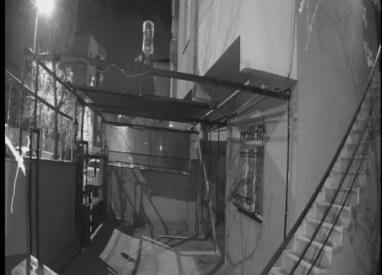
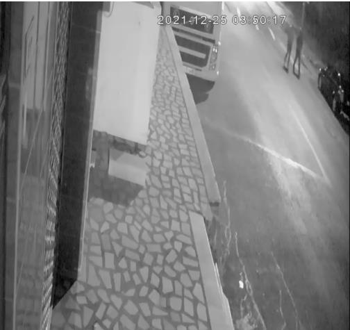
2. ŞÜPHELİ ŞAHIS
1. ŞÜPHELİ ŞAHIS
(Foto 1)
*CAM02 isimli kamera da şahısların saat:03.55.33 sıralarında kamera açısına girdikleri ve müşteki şahsın aracının yanına geldikleri(Foto 2)
ŞÜPHELİ ŞAHISLAR
MÜŞTEKİ
ŞAHSIN ARACI
(Foto 2)
Şüpheli şahısların saat:04.13.13 sıralarında olay yerinden ayrıldıkları tarafımızca görülmüştür.
2.OLAY (2021/4614)
CAM 02 isimli kamera da şüpheli şahısların 25.12.2021 günü saat:03.50.11 sıralarında Mevlana Caddesi üzerinden yaya olarak kamera açısından geçtikleri, saat:03.52.36 sıralarında müşteki şahsın aracı ile birlikte kamera açısına girdikleri ve müşteki şahsın aracının içerisinden araçtan indikleri ve olay yerinden geldikleri yöne doğru yaya olarak gittikleri tarafımızca görülmüştür.
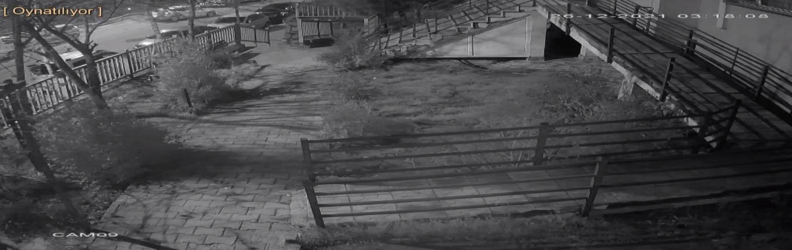
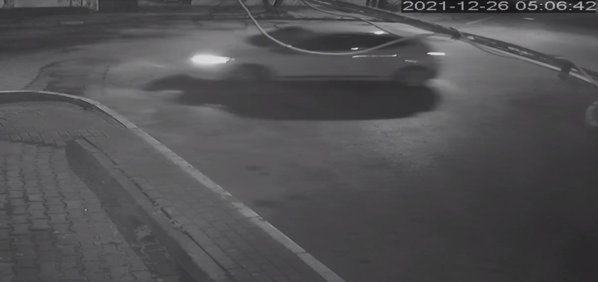
5.OLAY (2021/4640)
Görüntüler izlendiğinde 2 şüpheli şahsın aracın başına geldikleri, sol ön kelebek camı kırıp içeriye girdikleri aracı çalıştırdığı ancak aracın tam çalışmadığı, 2, şahsın araçtan aşağıya inip aracı ittiği aracı Yenikent sokaktan Üstün Caddesi istikametine götürdükleri anlaşılmış,
Aynı gün 05:06:42 de çalınan aracın Kurtköy Mahallesi Orhanlı Caddesine seyir halinde iken dönüşte şoför değiştirme esnasında aracın istop ettiği şahısların aşağıya indiği ve şahısların aracı bu şekilde bırakıp Orhanlı Caddesinden Ankara Caddesi istikametine doğru gittikleri,
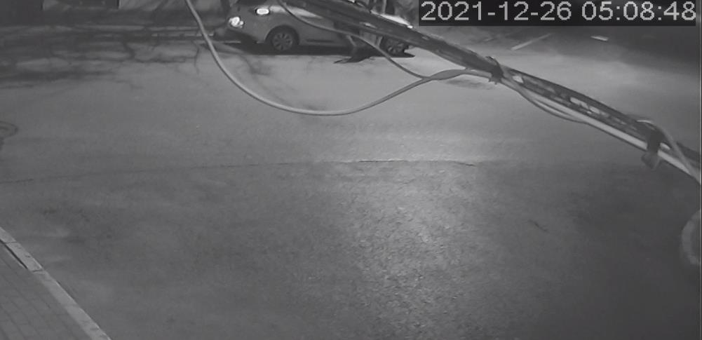
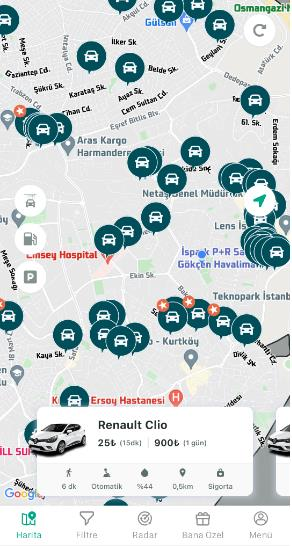
MOOV İSİMLİ ŞİRKETİN ARAÇ KİRALAMA YÖNTEMLERİ VE
ARACIN ÇALIŞTIRILMASI VE MOBİL UYGULAMASI İLE
İLGİLİ BİLGİLER
İnternet üzerinden moovtr.com adresinden veya Mobil Uygulaması ile gerek bilgisayardan gerekse de cep telefon veya tabletler ile giriş yapılabilen uygulamadır.
İnternet sayfasında verilen bilgiler doğrultusunda bu uygulama ile saatlik hatta dakikalık olarak ayrıca günlük araç kiralama hizmetinin sunulduğu, bu dijital hizmetle sadece ihtiyacı olan süre kadar araç kiralandığı, şubeye gitmeye gerek kalmadan müşteriye en yakın aracı uygulama üzerinden alınması, dilediğiniz yerde dilediği kadar kullandıktan sonra hizmet bölgesi içinde istediğin yere bırakmak park etmek şeklinde yazılmaktadır.
Bu uygulamada araç kiralarken uygulamada konum olarak araçların bulunduğu yerden bize yakın olan sokak veya caddede park halinde bulunan bu şirkete araçları bilgiler girildikten sonra kredi kartı ile aracı kullanıp park ettikten sonra ödeme yapılarak uygulama üzerinden telefon ile uzaktan kontrol edilerek sistemin açılması ve kiralayan şahsın aracın içine binip aracı kullanması ve dilediği zaman istediği cadde veya sokakta müsait olan park yerine aracın bırakılması ve uygulamadan kontrol edilip fotoğrafının da çekilmesi ve ana merkeze gönderilmesi suretiyle bu işlemlerin yapıldığı bilinmektedir.
Kiralanan aracın uygulama ile sistemden açılması ile araca binen müşteri aracın torpido gözünde bulunan aracın anahtarını aldığı ve kontağı açmak ve çalıştırmak suretiyle aracı kullandığı anlaşılmıştır.
Park halinde bulunan ve müşteri tarafından bırakılan araçların kapıları zorlanmak veya camları kırılıp araçların içine binilip torpido gözünde bulunan kontak anahtarı alan şahısların aracı çalıştırdıkları ancak aracın sistemden kontrol edildiği için fazla hareket etmediği, kısa bir süre tekleyerek gidip istop ettiği durduğu, araca dışardan zarar verildiğinde uygulama yönetiminin bunu görmediği (camın kırılması-kapı açılması vb) aracın anahtarının kontağa girmesi ve çalıştığında uygulama sisteminin bunun farkettiği ve aracın GPS bilgilerinin sisteme düştüğü anlaşılmıştır.
MEYDANA GELEN 5 AYRI OLAY İLGİLİ
DEĞERLENDİRMELER
Tutanağımızın başında işlenen Olay1-Olay2-Olay3-Olay4 ve Olay5 te yazılı olduğu halde meydana gelen tüm olayların aynı gün ve yakın saatlerde vuku bulduğu, park halinde olan MOOV isimli şirkete ait araçların aynı şekilde camlarının kırılıp içerisine girildiği, aracın içine binen şüpheli şahısların aracın torpido gözünden anahtar alıp aracı çalıştırmaya çalıştıkları, az hareket edip istop ettiği, şüpheli şahısların bununla yetinmeyip aracı halk tabiri ile yokuş
aşağıya iterek VURDURMAYA çalıştıkları, hareket ettirdikleri ve ilerledikleri araçları bir süre kullanıp bıraktıkları, ifadelerin tamamında görüleceği üzere şüpheli şahısların araçların torpido gözünden alıp çalıştırdıkları, araç istop edip aracı bu şekilde terk ettiklerinde şüpheli şahısların ARAÇ ANAHTARLARINI ÇALDIKLARI VE YANLARINDA GÖTÜRDÜKLERİ, ARAÇLARIN TAMAMINDA HASAR MEYDANA GELDİĞİ görülmektedir.
İdaremiz dahilinde meydana gelen bu 5 ayrı ancak yöntem olarak aynı olan olaylara ait görüntüler temin edilmiş ve Polis Merkezimizde mevcut bilgisayarlarda bilirkişi olmaksızın tekrar tekrar dikkatlice izlendiğinde, alt sayfalarda görüleceği üzere şüpheli şahısların uzaktan da olsa eşgalleri ve giyim kuşamları tespit edilmiş ve şüpheli şahısların bazı yerleri sokak ve caddeleri gerek yaya gerekse bir süre sonra motosiklet ile geçtikleri görüntüler ısrarlı takibimiz sonucu elde edilmiştir. Harita üzerinde numaralandırılan yerlerden geçişlerine ait videoların ekran alıntıları da aşağıya çıkartılmıştır.
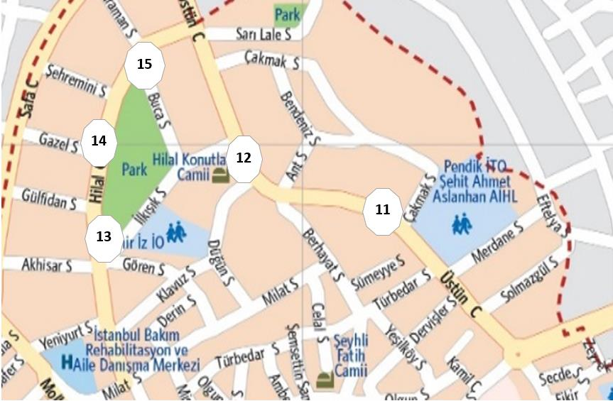
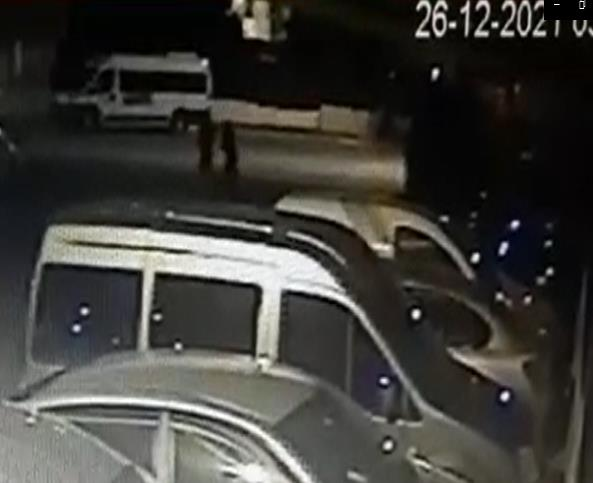
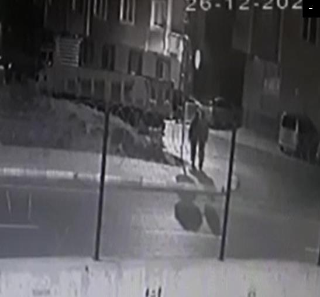
ŞÜPHELİ 2 ŞAHSIN OLAY SONRASI YAYA OLARAK
GİTTİĞİ GÜZERGÂHLAR
ŞÜPHELİ 2 ŞAHSIN OLAY SONRASI MOTOSİKLET İLE
GEÇTİĞİ GÜZERGÂHLAR
16
17
18
ŞÜPHELİ 2 ŞAHSIN OLAY SONRASI YAYA OLARAK
GİTTİĞİ GÜZERGÂHLAR
Haritada 1
Haritada 2
nolu sokak
nolu sokak
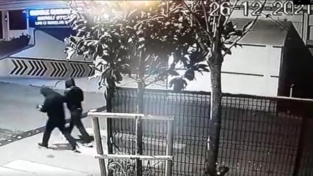
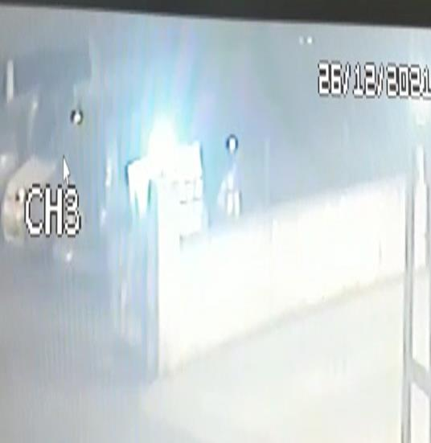
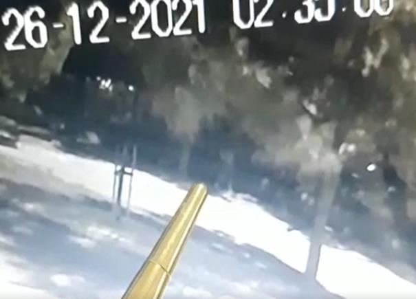
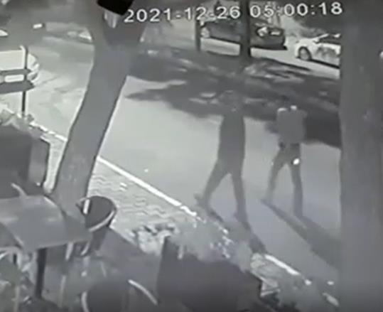
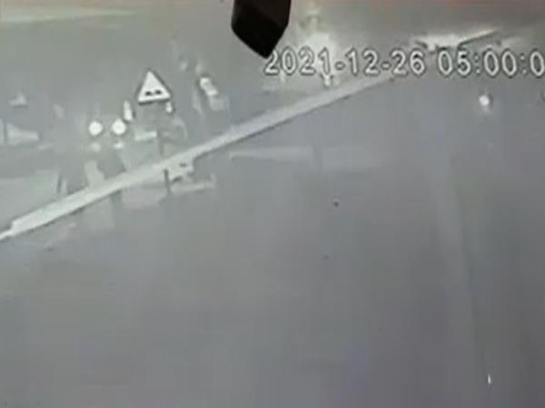
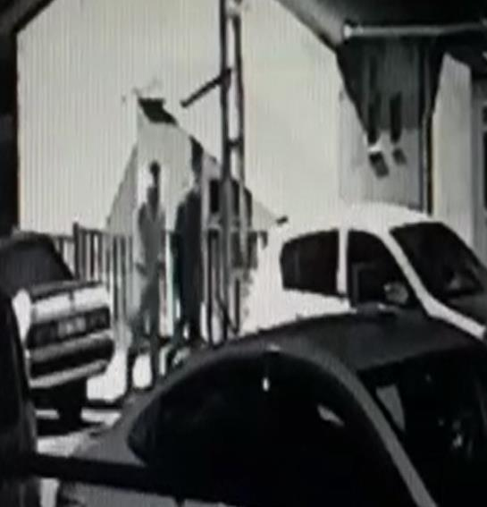
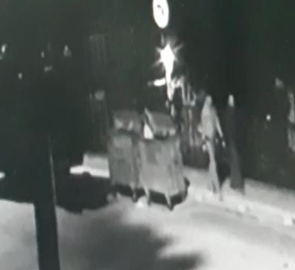
Haritada 3
Haritada 4
nolu sokak
nolu sokak
Haritada 5
Haritada 6
nolu sokak
nolu sokak
Haritada 8
nolu sokak
Haritada 7
nolu sokak
Haritada 9
Haritada 10
nolu sokak
nolu sokak
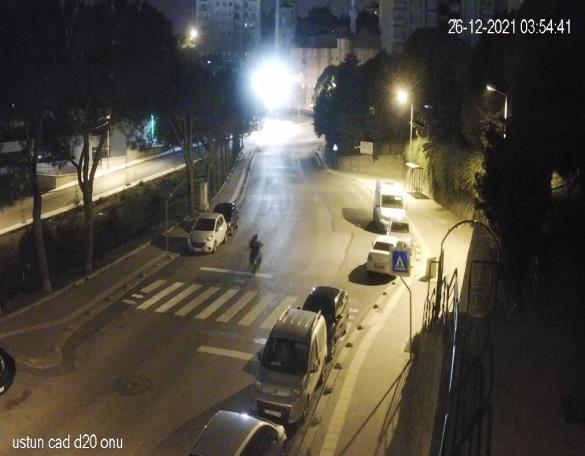
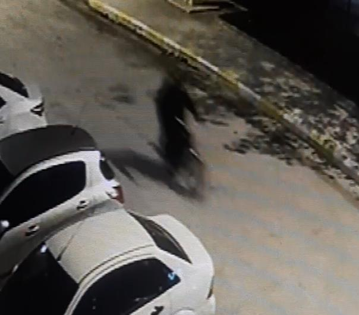
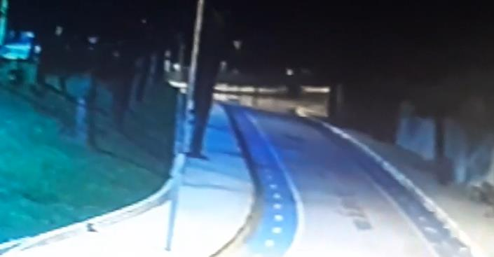
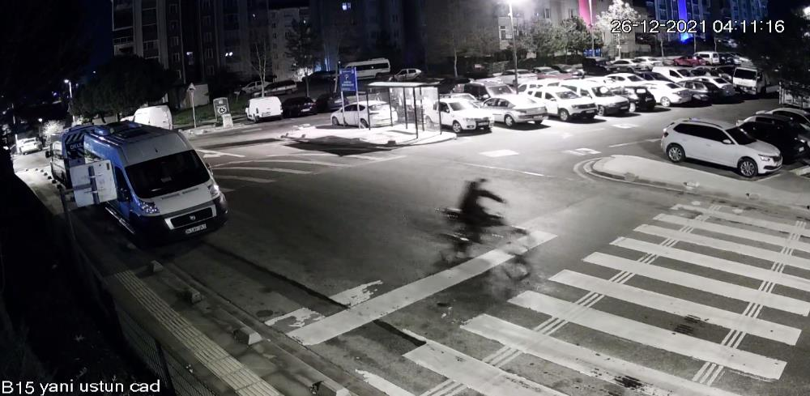
ŞÜPHELİ 2 ŞAHSIN OLAY SONRASI MOTOSİKLET İLE
GEÇTİĞİ GÜZERGÂHLAR
Haritada 12
nolu güzergah
Haritada 11
Haritada 13
nolu güzergah
nolu güzergah
Haritada 14
nolu güzergah
Haritada 15
nolu güzergah
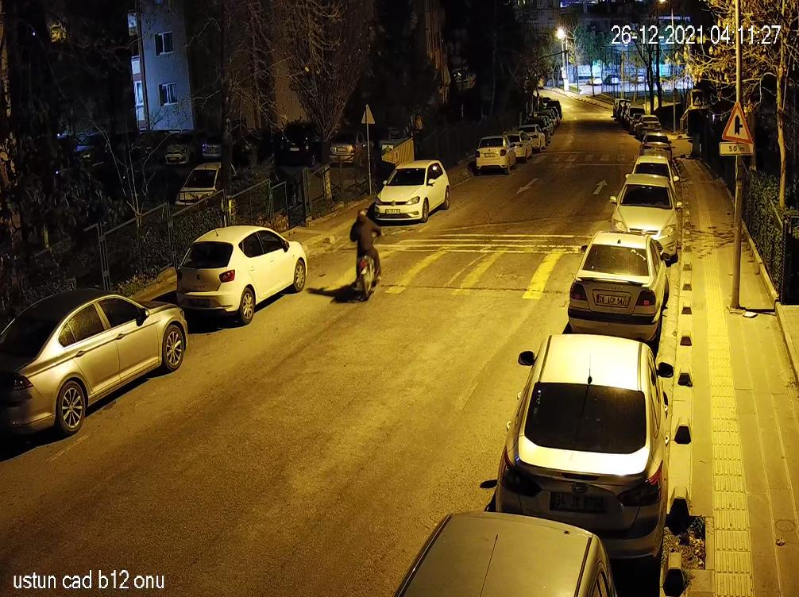
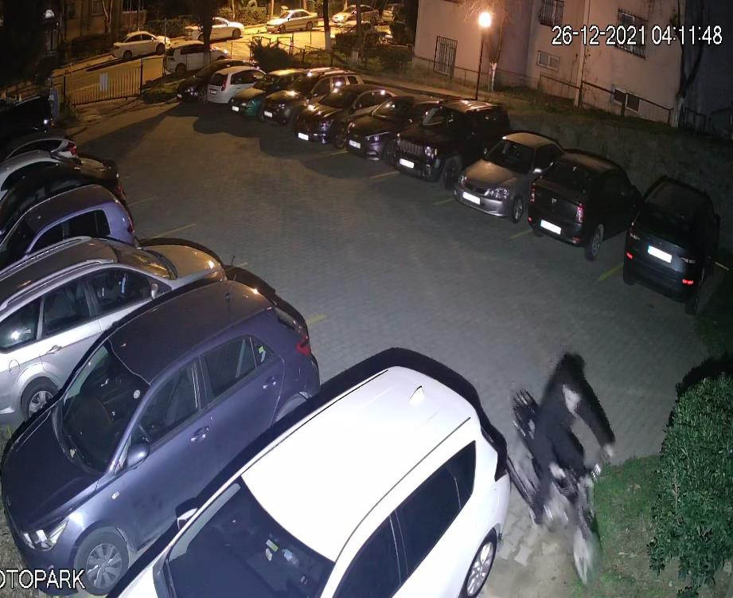
Haritada 16
nolu güzergah
Haritada 17
nolu güzergah
Haritada 18
nolu güzergah
Bu şekilde şüpheli şahısların gerek harita üzerinde gösterdiğimiz güzergahları kullandıkları ve motosiklet ile geçtikleri yerlere ait video görüntüleri incelenmiş ve son olarak 1. Şüphelinin motosikleti kullandığı ve arkasındaki şahsı bıraktığı ve bundan sonra kendi evine girdiği görülmüş, bunlara ait video ekran alıntıları aşağıya çıkartılmıştır.
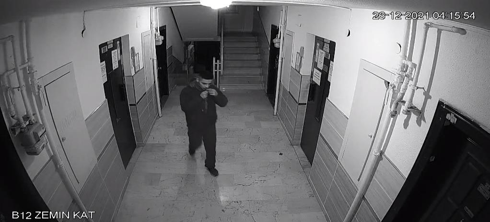
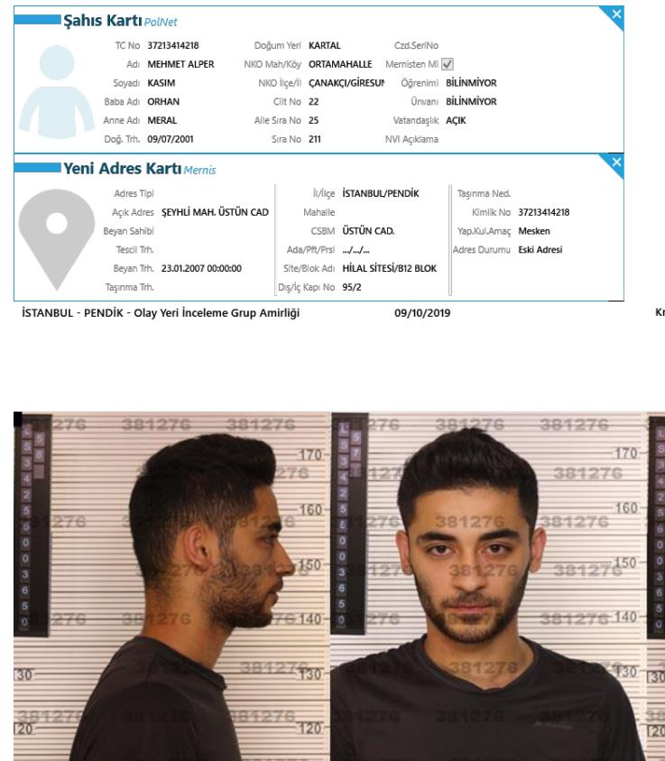
SONUÇ VE TESPİT
Bahse konu olaylar ile ilgili olarak toplamda 26 ayrı kamera görüntüleri adım adım güzergah takip edilerek alınmış ve ısrarlı ve dikkatli bir şekilde izlendiğinde, şüpheli şahsın son olarak ikametine girdiği görülmüş, burasının olay yerlerine çok yakın olan Şeyhli Mahallesi Hilal Konutları B12 Blok olduğu ve şahsın girdiği yerin Daire 2 olduğu anlaşılmış, Polnet Yerleşim yeri Sorgulamadan şüpheli şahsın aşağıda görüleceği üzere Mehmet Alper KASIM isimli şahıs olduğu tespit edilmiştir.

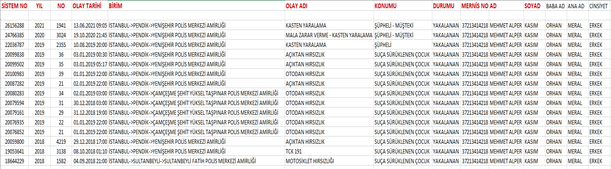
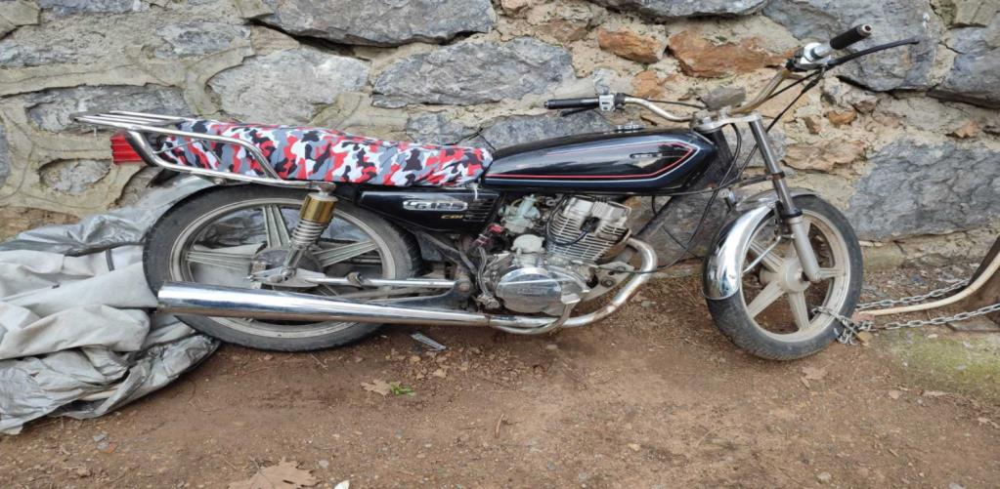
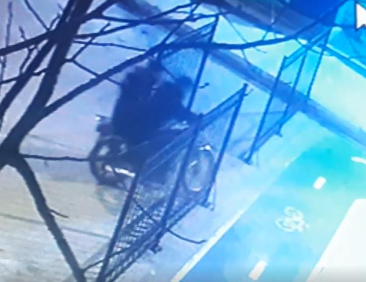
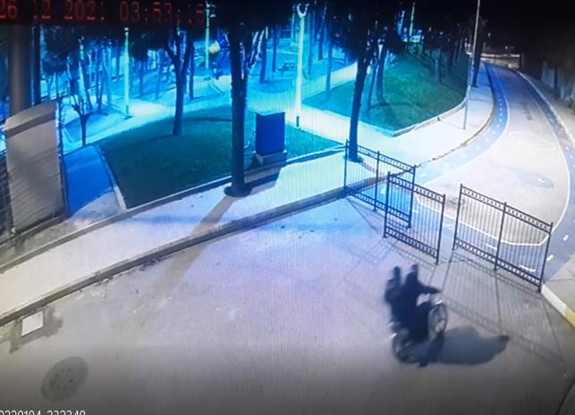
37213414218 T.C. kimlik numaralı Orhan ve Meral oğlu 09/07/2001 doğumlu (Kartal) Giresun Çanakçı nüf. Kayıtlı Mehmet Alper KASIM isimli şahsın Polnet karıştığı olayla ait bilgiler
Olayda elde edilen görüntülerde şahısların güzergahta motosiklet kullanmalarından dolayı şüpheli Mehmet Alper KASIM ın adına tescilli araçlar sorgulandığında olayda kullanılan motosiklet
ile
birebir
benzer
özellikler
gösteren
plakasız
çekme
belgeli
NLKCT17FXG0002484 ŞASE numaralı motosiklet olduğu tarafımızdan tespit edilmiştir.
4
5
1
2
3
6
1. Motosikletin arka plakasının yerinde olmadığı,
2. Motosikletin arka oturma alanındaki demir ızgara
3. Motosikletin egzos kısmının parlak metal kaplama olduğu
4. Motosikletin geniş direksiyona sahip olduğu
5. Motosikletin ön çamurluğunu metal kaplama olduğu
6. Motosikletin jantının 5 kollu çelik jant olduğu tespit edilmiştir.
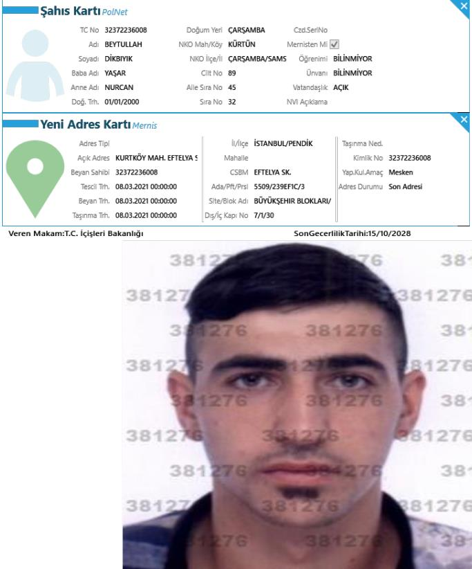
Mehmet Alper KASIM isimli şahsın adım adım takip edilen görüntülerde olayın 2.şüpheli şahsını kendi ikametine gitmeden hemen önce motosikleti ile bıraktığı ve kendisinin tek olarak motorla sitesine ve dairesi giriş yaptığı görülmüş,
2. Şüpheli şahısla ilgili yapılan araştırmada görüntülerdeki şahsın bizce bilinen Beytullah DİKBIYIK olduğu değerlendirilmiş ve tekrar görüntü izlendiğinde; 15 nolu güzergah harita ve ekran alıntısında görüleceği üzere şüpheli Mehmet Alper KASIM ın Beytullan DİKBIYIK
isimli şahsın ikametinin orda duraksadığı ve muhtemelen bu şahsı indirdiği anlaşılmış, Beytullah DİKBIYIK isimli şahsın ikameti resimde işaretli olarak gösterilmiştir. Ayrıca Mehmet Alper KASIM ile Beytullah DİKBIYIK ın kasten yaralama olayında suç birlikteliğinin olduğu anlaşılmıştır.
Kurtköy mh. Eftelya Sk.
No: 7/1/10
Mehmet Alper KASIM
2021/4640 suç numaralı OTO HIRSIZLIĞI na ait izlenen tüm görüntüler doğrultusunda 1.
Şüpheli şahsın yukarıda açık kimliği yazılı olan Mehmet Alper KASIM olduğu tarafımızca tespit edilmiş, 2 .şüpheli şahsın ise 32372236008 T.C. kimlik nolu Yaşar ve Nurcan oğlu 01/01/2000 Çarşamba doğumlu Samsun Çarşamba nüf. Kay. Beytullah DİKBIYIK olduğu tespit edilmiş olup; şahsa ait bilgiler aşağıya çıkartılmıştır.
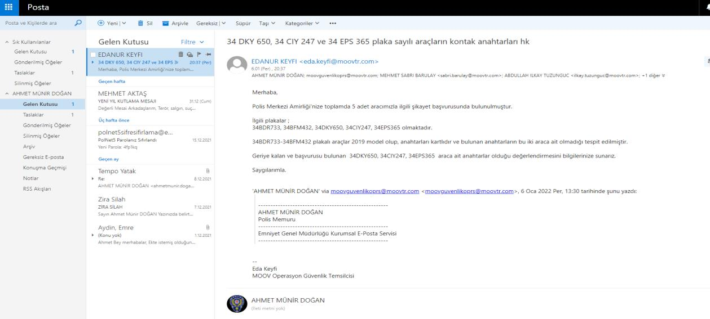
Polis Merkezimiz idaresinde o tarihlerde meydana gelen Oto Hırsızlığı ve Otodan Hırsızlık konuları ile ilgili yaptığımız çalışmalarda, faillerin tespiti ve yakalanması, suçun önlenmesi amacıyla biz görevlilerce belirttiğimiz olaylar sonrası olayların olduğu yerlere yakın olan cadde ve sokaklarda MOOV uygulamasında da araçların bulundukları yerlerde gerekli tedbirler alınıp gerek yaya gerekse araç ile yaptığımız uygulama esnasında 27/12/2021 tarihinde gece saat: 03:10 sıralarında Şehyli Mahallesi Üstün Caddesi üzerinde Motosiklet ile gezen Mehmet Alper KASIM ve Beytullah DİKBIYIK görülmüş, GBT uygulaması ve sorgusu yapılmış aranmaları olmadığı ve bu olaylardan dolayı henüz tespitleri olmadığından dolayı şahıslara herhangi bir işlem yapılmamıştır. Fakat 28/12/2021 günü Hilal Konutları Yönetimi tarafından biz görevlilere, 27/12/2021 tarihinde biz görevlilerce durdurulup kontrol edilen Mehmet Alper KASIM ve Beytullah DİKBIYIK isimli şahısların bulunduğu adresin yaklaşık 20 metre yakınında 3 adet Renault marka manuel sistem araç kontak anahtarları bulduklarını beyan etmeleri üzerine bahse konu aşağıda resmi bulunan 3 ayrı anahtar biz görevlilerce teslim alınmış, MOOV yetkilileri ile yapılan görüşme ve yazışmalar sonucu bu anahtarların; 34 DKY 650, 34CIY247 ve 34EPS365 plakalı araçlarına ait olduklarını tarafımıza bilgi vermişler, yazışmada belirtilen plakalardan
Olay 3 olarak işlediğimiz 2021/4621 suç numaralı olaydaki 34DKY650 plakalı araca ait olduğu,
Olay 4 olarak işlediğimiz 2021/4623 suç numaralı olaydaki 34CIY247 plakalı araca ait olduğu,
Olay 5 olarak işlediğimiz 2021/4640 suç numaralı olaydaki 34EPS365 plakalı araca ait olduğu tarafımızca tespit edilmiştir.
Bu sebeple Olay3-4 ve 5 sayılı olayların tespit ettiğimiz Mehmet Alper KASIM ve Beytullah DİKBIYIK oldukları, yine Olay1 ve 2 olarak işlediğimiz olayların da benzerlik ve tarih bakımından ayrıca izlenen görüntüler doğrultusunda yine Mehmet Alper KASIM ve Beytullah DİKBIYIK oldukları değerlendirilmiştir.
Tespit edilen yukarıda açık kimlik ve adres bilgileri yazılı şüpheliler Mehmet Alper KASIM ve Beytullah DİKBIYIK isimli şahısların yakalanması amacıyla 08/01/2022 günü yaptığımız çalışmalarda saat: 16:30 sıralarında Şeyhli Mahallesi Üstün Caddesi üzerinde her ikisinin birlikte görülmeleri üzerine tarafımızdan yasal hakları okunup hatırlatılmış ve yakalanmış olup Polis Merkezi Amirliğimize teslim edilmişlerdir.
İş Bu Olay, Görüntü İzleme, Araştırma, Tespit Ve Yakalama Tutanağı tarafımızdan tanzimle altı birlikte imza altına alınmıştır. 08/01/2022 17:30
181549
381276
478830
483269
Polis Memuru
Polis Memuru
Polis Memuru
Polis Memuru
Mehmet Alper KASIM
Beytullah DİKBIYIK
Yakalanan
Yakalanan